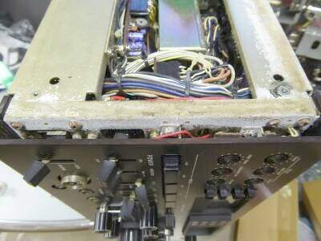 |
この製品の一番の問題かなと思えるのは、使用されている隙間テープ？・・・・結果として、このものが湿気を吸って自身はおろか周囲を腐食させてしまう、これは良いと思って採用したものの思わぬトラブルメーカーになった、採用ミスかと思われます
写真は、その朽ちた隙間テープ？を剥した跡です
回りはすっかり白く錆が浮いています
幸いにも、近くのＳＷなどには影響は出ていませんでした |
| 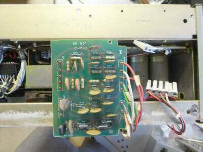 |
入手した時点で、電源ＳＷを入れるとヒューズが飛ぶ、電源が入らないという状況でした
その原因は、この整流ユニットにある高圧整流ダイオード２本のショートにありました
点検の結果、ほかに問題は見当たらなかったので、ダイオード交換後、そのまま通電しました
無事通電できました |
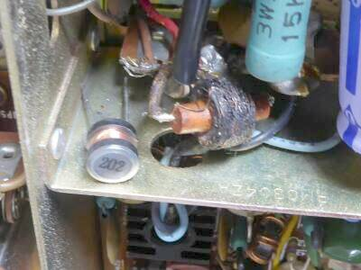 |
受信はできましたが、送信できません
まず気づいたのが、ドライバ管に＋Ｂを給電するＲＦＣが黒焦げでした
これは、今風の２ｍＨのＲＦＣに交換することでＰａｓｓしました
下段のＣパンクも含め、また中和も大きく崩れていたこと（ＰＡチューンの状況によっては発振していた）等から、ＰＡの発振に起因してこれらトラブルが起きたのかなぁと想像します |
| 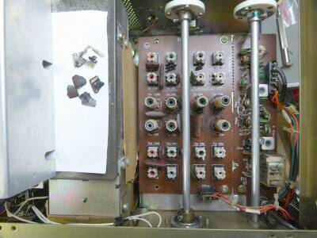 |
１６０／４０／１０ｍバンドが送信できない・・・正確にはパワーが出ない！です
８０／２０／１５ｍバンドは、問題なく１００Ｗ程度の出力が出ています
ＲＦ基板をシールドを外してチェックすると、Ｃ３７と思われるマイカ・コンデンサがパンクしていました（基板が黒く焼けていて、判読しづらいのですが、たぶんＣ３７だと・・・）
左の白いペーパーの上に、その破損したコンデンサの破片を載せています
回路図がないので、本当にこれが犯人かどうかはわかりませんが、きっとそうであろうと・・・しました！ |
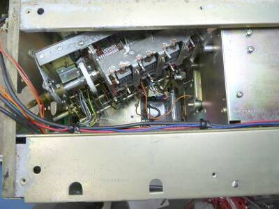 |
Ｃ３７と思われるコンデンサ
その大きさなどから１００～３００ｐF程度の容量と想像されます
取付位置、あるいはその容量から、少なくても１０ｍバンド用の同調Ｃではありません
カット・アンド・トライでやってみようと、ＲＦユニットの分解を試みましたが、半田付けを外さないと目的の場所までたどり着けないことがわかりましたので、ここで諦めました
左写真は、諦めた時点でのスナップで、右サイドから分解中のＲＦユニットを写したもの、右のシールドは終段部です
ＶＣは、ＲＦチューン用で、送信ドライブ、受信ＲＦアンプの同調をとるものです
トップミクサ（アッテネータＯＮ）で受信するときには影響しません |
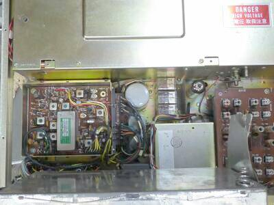 |
本体上側ケースを外して上から写したものです
シールドケースの下は、電源部とファイナル部です
フロントパネルにつながるプレートＶＣとロードＶＣの軸は外しています
シールドケースに収まったデジタル表示部を持ち上げて、その下を写したものです
中央右寄りにドライバ管の頭が見えます
その右のボードは、ＲＦユニット
この部分はユニット化されていて、同調ＶＣは下側にあります（シールド板を取り外して写しています）
左には、９ＭＨｚ８ポール・クリスタル・フィルタが見えます（９ＭＨｚ-ＩＦユニット）
下に見えるシールドされた箱は、ＶＦＯ部です |
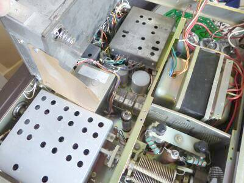 |
上カバーを外し、後ろ側のシールド板を外して写しています
ディジタル表示ユニットを持ち上げています
その下に見えるのは９ＭＨｚ-ＩＦユニットです
手前のシールドされた部分は、ＲＦユニットです
電源トランスは大きく、余裕を感じます
ディジタル表示ユニットを定位置に固定することで、ドライバ管の頭を押さえる構造になっています
ファイナル管も、ふたつのプレート間をエポキシ板と思われる素材で固定してあります |
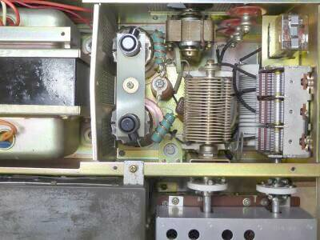 |
上面奥シールドカバーを外した状態です
ファイナル管のプレート間が固定してあること以外、一般的な景色です
この写真では分かりませんが、ファイナル管の下側のシールド板には穴が多数開けられていて、ドライバ管の放熱・・・空冷ファンによる空気の流れがドライバ管をも巻き込むように設計されています（終段部シールド板の他部分は、密閉されるような構造です）
|
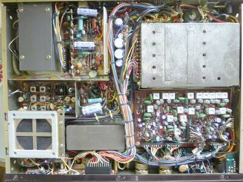 |
下カバーを外した状態です
下がフロントパネル側です
右側にみえるシールド部は、ＰＬＬユニット
その下に並んで見える白の物体はＩＦＴ・・・５０ＫＨｚのIFTユニットです
左上は、ファイナル部 シールドの中身はＬＰＦです
スピーカーは、しっかり固定されています
スピーカー右のシールドの中身は、キャリアOSCユニットです |
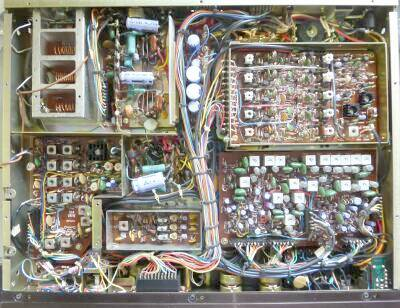 |
上段と同じシャーシ底側の様子ですが、シールドケースと内臓スピーカーを除けた状態の写真です
右上がＰＬＬ部で、今回ＪＪＷ／ＷＷＶ（１０ＭＨｚ帯）のＬｏｃｋが外れていましたので調整を行いました |
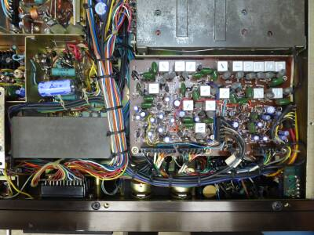 |
シャーシ下 右下部です
５０ＫＨｚ ＩＦユニットのアップです
ＩＦＴが６つ並んでいるのは、ＣＷ用集中ＩＦフィルタ
横に並んいる合計９個のＩＦＴがＣＷ受信に関係しています
テクニカルガイドにある回路図で確認しました
|
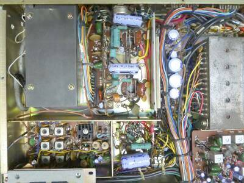 |
シャーシ下 左上です
左上シールドで囲まれた部分は、ファイナル部シャーシ下です
その右下に、ドライバ管のソケットが見えます
その左が、送信ＲＦ部（ドライバの前段）
|
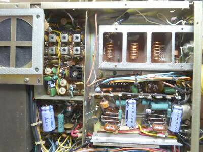 |
シャーシ下 送信ＲＦ部のアップです
ＬＰＦ部も、シールドを取り外して写しました
本格的なＬＰＦを内蔵、です |
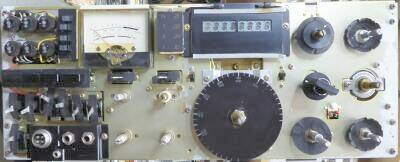 |
こちらは、フロントパネルを取り外したフロントシャーシ |
故障品は、叩けば治る？？？
よく言われることですが、意外と当たっています
今回、最後の修理テーマは、感度が悪い！でした
原因がわからず、ドライバーの柄でもってファイナル・シールド・ケースを一撃すると、あららガッツリ感度が上昇
ただ継続性がありません
原因を追いかけると、ファイナル・ユニットに内蔵されてるリレーの接触不良でした
|
本機の受信アッテネータは、一般的な抵抗器による減衰ではありません
アッテネータＯＮで、トップミキサでの動作 アッテネータＯＦＦで、ＲＦＡｍｐが働く・・・です
１４．２ＭＨｚにて、Ｓ／Ｎ１０ｄｂが得られる入力は、
アッテネータ ＯＮ時、すなわちトップミキサの状態で １．３μＶ
アッテネータ ＯＦＦ時、すなわちＲＦＡｍｐが働いた状態で ０．１７μＶ
実際に耳で聞くと、ＳＷのＯＮ／ＯＦＦで、ノイズ・フローにはほとんど変化なく、感度だけが変化する感じです（いい感じです）
カタログデータは、０．２５μＶ以下、です
|
|
機能ほか
ノッチフィルタ、ノイズブランカ いずれもよく効きます
トップミキサ＋ＲＦアンプという設計は、当時とすればちょっと興味深いです
それをアッテネータＯＮ／ＯＦＦで現わしているところも面白い点です
受信に関しては、全体的に静かで、落ち着いた使用感が得られます
デジタル周波数表示のひとつにメモ機能があります
フロントパネル表示で点灯していない右側に、覚えておきたい周波数をメモ・表示させることが来ます（単純にその周波数を記憶表示するだけ）
メインダイヤルは、１回転２０ＫＨｚで、ダイヤルタッチは悪くありません
が、ダイヤル・ノブはプラスチック製・・・このクラスのダイヤル・ノブにしてはチープです
|
|
入手した本機は、保存状態も良くなく、外観も傷まみれで、見栄えそのものは良くありません
が、内部の状態はそんなに悪くなく、一部送信はできない（パワーが出ない！）にしても、十分当時の雰囲気を再現できることができたように思います
なにせ４０数年という時間が経過しています |
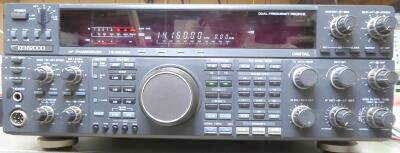 |
ちょうど作業テーブルの下にＴＳ-９５０ＳＤＸが置いてあったので、こちらの感度も同じ条件で測ってみました
こちらは、１９９２年発売のＤＳＰ搭載モデルです
結果は、０．１５μＶ入力で、Ｓ／Ｎ１０ｄｂでした（１４．２ＭＨｚ）
アナログ設計のＲＪＸ－１０１１の感度もほぼ同じという結果です（感度だけに限れば、１７年という時間をかけての進化は、ほとんど無いということですね） |
|